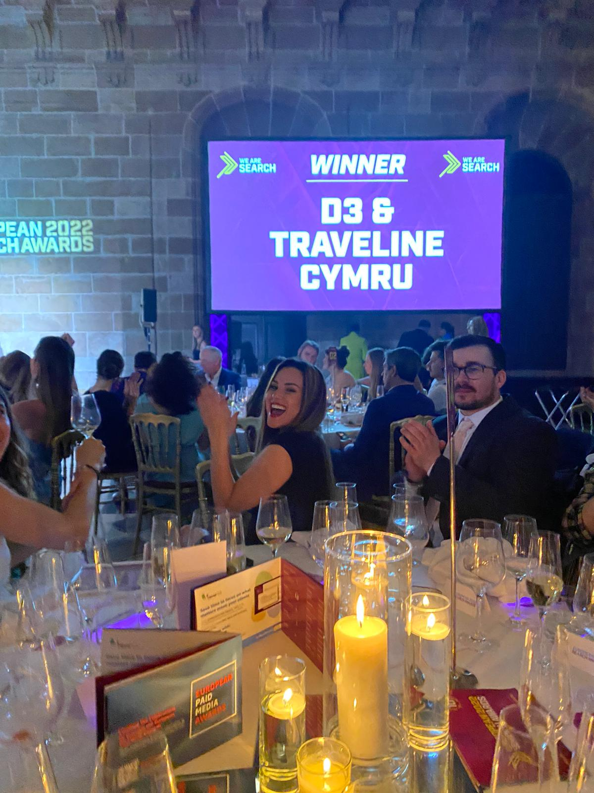
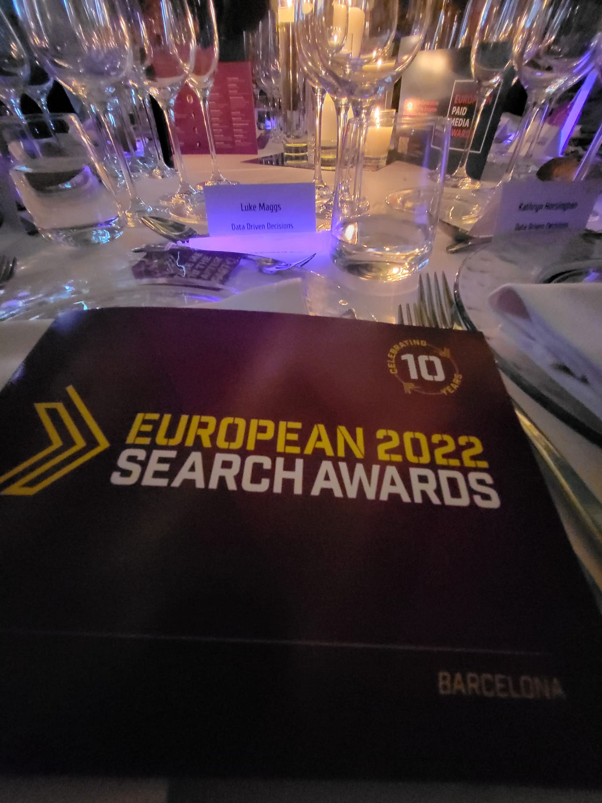

Winner at the Barcelona European Search Awards 2022
As a relatively young agency D3 was delighted to have been shortlisted in 5 categories at this years European Search Awards
The event was a fantastic opportunity to meet talented teams and individuals from across the sector, as well as for the D3 team to enjoy a few well earned days in the beautiful city of Barcelona.
What are the European Search Awards?
The European Search Awards celebrate the very best of SEO, PPC and Content Marketing across the EU. Each year, hundreds of search and digital agencies, as well as agencies from around the globe who deliver work in the European market, submit entries in various hotly contested categories.
From the best use of search in retail, travel and gaming, to the best PPC campaigns, the best SEO campaigns and much more, these prestigious awards are a real opportunity to showcase the work of agencies and their clients from a diverse range of sectors. 2022 Award Winners.
The event was hosted by Ricky Merino at a gala dinner and awards ceremony at La Llotja de Mar, Barcelona, on Thursday 26th May 2022.
What categories were we shortlisted in?
The European Search Awards felt like an unmissable chance for us to have our work recognised on an international scale amongst some of the very best digital agencies.
We chose to enter 5 different categories, with our submissions focussing on our work with client Traveline Cymru. In February 2021, Traveline Cymru came to us wanting to promote their new ‘myhealthjourney’ website, which provides public transport information for hospitals and medical settings across Wales.
Set against the backdrop of essential travel restrictions due to the Coronavirus pandemic, a small budget and tight time frame, we carefully selected audiences for this PPC and Social campaign across Google, YouTube and Facebook to maximise reach and relevance. With over 1 million impressions and nearly 12,000 clicks, we were thrilled with what we were able to achieve in such a short space of time, making this the perfect showcase for our award submissions.
We were over the moon to discover we had been shortlisted in the following 5 categories:
- Best Small Agency: D3 is a small organisation, with Managing Director and award-winning PPC specialist Kate Horsington at the helm. Whilst many agencies running as a multi-team operation, the success of D3 over the last 2 years is testament to Kate’s hard work and ambition to deliver the very best for her clients. This certainly rang true on the case of Traveline Cymru’s ‘myhealthjourney’ campaign, which Kate expertly delivered while continuing to provide a high-quality service for D3’s other clients.
- Best Use of Search (Travel/Leisure) (PPC): Following the success of the ‘myhealthjourney’ campaign, entering this award category was a no-brainer. The campaign was designed to increase brand awareness and help those making essential journeys access the information they needed. The campaign was also underpinned by messages of considering the environmental benefits of using more sustainable transport modes, which influenced our use of keywords and topic targeting.
- Best Use of Search (Health): We felt our ‘myhealthjourney’ campaign would stand out from the crowd in this category. The aim of the campaign was to help thousands of healthcare workers and their patients across Wales reach their healthcare appointments, on time and as safely as possible, which we achieved. The service itself was also created with the support of health boards across Wales, meaning it was designed with the needs of its diverse userbase in mind.
- Best Use of Search (Third Sector/Non for Profit): Traveline Cymru is a non-for-profit organisation that provides free public transport information. It was important to us that the campaign was delivered in accordance to their brand identity, which included being bilingual. With its Welsh language component, Facebook was an important part of our campaign strategy.
- Best Small Budget Campaign: With the client being non-for-profit, as well as constraints due to the Coronavirus pandemic, this was a low-budget campaign with ambitious targets. We made sure the campaign told a story through bespoke illustrated imagery that was clear and consistent, used careful audience targeting, relevant messaging and calls-to-action to maximise the campaign’s reach and increase brand awareness.
How did the Awards event go?
The awards took place at the beautiful La Llotja de Mar, Barcelona, on Thursday 26th May 2022.. Representing D3 was Managing Director Kate Horsington, Luke Maggs, and Ellie Jerman. This was the first time we had all been able to travel face-to-face(with all work on this campaign having taken place remotely) so there was even more reason to celebrate. We spent a few days ahead of the event exploring Barcelona and finally headed to the drink’s reception, dressed to impress!
Once all the guests were seated in the hotel’s ballroom, Ricky Merino kicked off the evening’s proceedings and introduced event organisers We Are Search. We then tucked into a delicious 3 course meal and got to know our talented table neighbours and fellow Award Winners Reprise Digital
With our drinks at the ready, it was wonderful to witness so many talented agencies from across Europe be recognised for all their hard work. We were humbled and blown away when Ricky announced that D3 came out on top winning Best PPC Low Budget Campaign (We also picked up a Silver award for the best use of search (health) with our innovative Traveline "Keep Healthcare Moving" campaign!)
Being an award winning agency is testament to all of Kate’s hard work, but also the work of the entire Welsh transport industry to keep public transport services running for key workers and those making essential medical journeys during the pandemic. We can’t wait to see what opportunities the next year brings and and look forward to helping many of you along the way
If you would like to discuss what D3 can do for your organisation, please get in touch. ppc@datadrivendecisionsltd.com
 

D3|Data Driven-Decisions: